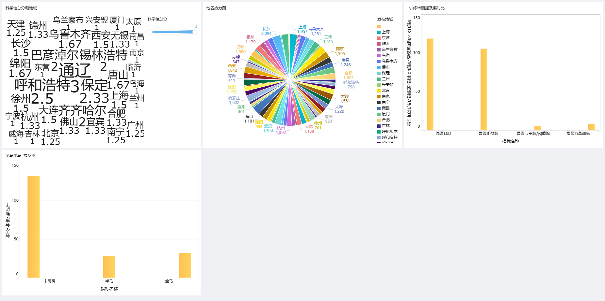

🏃 马拉松训练计划科学性评估
基于AI生成跑者评论的数据分析报告
📅 数据时间：2026年3月-6月
📊 有效样本：164条
🤖 数据来源：AI生成模拟跑者讨论
📝 数据说明：本项目使用AI大模型原始生成200+条跑者训练评论，经Excel“无用信息”筛选（剔除不含任何训练术语的内容），最终保留164条有效数据用于分析。
🔍 核心分析洞察
-
📌 洞察1：跑者讨论高度集中于LSD和间歇跑，力量和节奏训练严重缺失
数据显示，LSD提及率高达72.6%，间歇跑提及率64.6%，但力量训练仅5.5%，节奏跑/阈值跑仅3.7%。
绝大多数跑者讨论集中在“耐力”和“速度”两个极端，而连接二者的“节奏跑”及预防损伤的“力量训练”
被严重忽视，训练结构呈现“两头大、中间小”的不均衡特征。
-
📌 洞察2：超过八成讨论未明确赛程目标，训练针对性不足
全马或半马明确提及的比例合计不足20%，高达80.5%的讨论未明确是针对全马还是半马。跑者在分享训练内容时
缺乏目标导向，难以判断训练计划是否与参赛距离匹配，也反映出大众跑者“重训练方法、轻目标管理”的倾向。
-
📌 洞察3：科学性等级地域分布异常，受限于样本采集方式
数据显示，科学性总分最高的地区为通辽、保定、呼和浩特等城市，而非一线城市。这一结果与常识相悖，
推测是由于AI生成文本时地域标签随机分配所致，不代表真实地域差异。本分析不适用于地域维度的科学性比较。
-
📌 洞察4：平均科学性等级偏低，系统化训练理念普及不足
根据四类训练方法的提及情况，跑者训练科学性总分普遍集中在1-2分（同时提及1-2种方法），达到3分及以上的比例极低。
多数跑者仅关注“跑量”和“速度”，缺乏对“节奏跑”及“力量训练”的认知，科学训练理念仍有较大普及空间。
-
📌 洞察5：地域热力图差异不显著，跑步训练已走向大众化
从地域分布来看，各城市讨论热度差异不明显，除极少数偏远地区外，大部分城市的热度水平接近。
这一现象说明：跑步训练的相关知识讨论已不再是“大城市专属”，而是广泛普及至全国各级城市，
反映出马拉松及路跑文化的大众化趋势。
📈 FineBI 交互式仪表板
以下为FineBI 5.1可视化分析仪表板，包含术语提及率对比、科学性等级分布、地域热力图及全马/半马分类分析。

';">